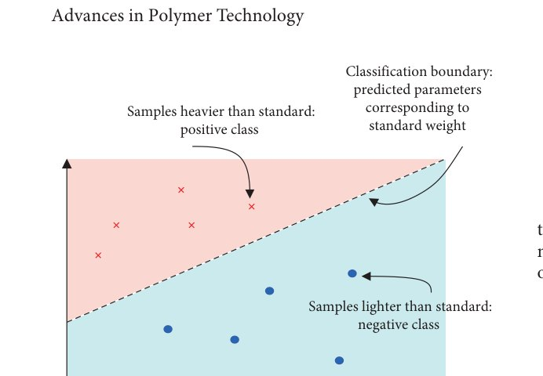

注塑重量控制：优化问题转分类问题（SVC + PSO）Injection Weight Control: Optimization-to-Classification (SVC + PSO)
把“找最优工艺参数”这一优化问题巧妙转化为“重量正/负偏差的分类问题”：用支持向量分类(SVC)构造一个“重量误差为零”的分类超平面，再用粒子群优化(PSO)调超参，少量样本即可把平均重量误差压到 0.0212%。Reframes parameter optimization as classifying weight as above/below standard: an SVC builds a “zero weight-error” hyperplane and PSO tunes its hyperparameters, driving mean weight error down to 0.0212% with few samples.
背景Background
制件重量是高精度注塑（如塑料透镜）的关键质量指标；传统试错确定参数成本高、不适合复杂件。Part weight is a key quality metric for precision molding (e.g., plastic lenses); trial-and-error tuning is costly and unfit for complex parts.
方法Method
- 在不同参数下生产样件，按与标准重量比较打正/负标签并计算重量误差。Make samples under varied parameters, label them above/below standard, and compute weight error.
- 用 SVC 构造“误差 = 0”的分类超平面。Build a “zero-error” classification hyperplane with an SVC.
- 用 PSO 调 SVC 超参，最小化预测与实验误差。Tune the SVC hyperparameters with PSO to minimize prediction vs. experiment error.
结果Results
- 平均重量误差低至 0.0212%，仅需少量实验样本，降本省时。Mean weight error as low as 0.0212% with only a few samples—cheaper and faster.
- “优化 → 分类”的问题转化思想，小样本友好。An “optimization-to-classification” reframing that is friendly to small data.
图片Figures

本人参与该课题组研究（如 SVC+PSO 建模、实验数据处理与对比等可核实环节）。I contributed to this lab research (e.g., SVC+PSO modeling, data processing, comparison experiments).